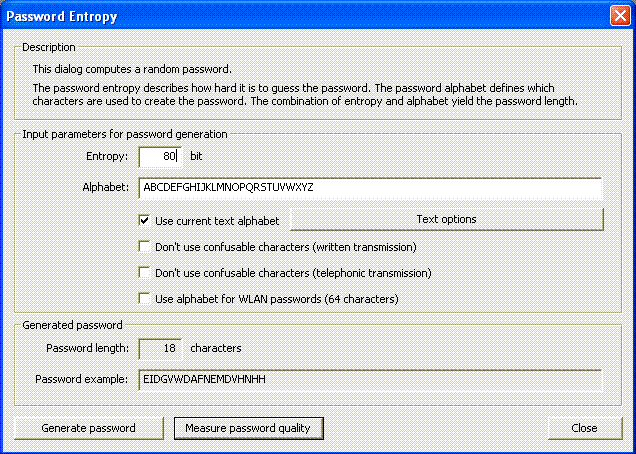

You can reach this dialog using the menu entry Individual Procedures \ Tools \ Password Entropy.

With this dialog you can generate passwords with a specific entropy. A reasonable application of this dialog reads as follows:
As of today, a randomly chosen key for modern symmetric encryption methods with an entropy of more than 80 bit is considered secure [1]. Thus, if you want to generate a password of equivalent security, you have to generate a password with an arbitrary password alphabet and a password entropy of 80 or more bit.
For comprehensive information on passwords click here, information regarding password quality can be found here.
In order to generate a random password, you have to enter a password entropy and a password alphabet in the upper section of the dialog.
With the button Generate password you can generate a random password.
Besides manual changes, you can alter the password alphabet by marking the following check boxes: Each check box represents a different alphabet. If you check more than one check box, the set union of those alphabets is used as password alphabet.
If the check box Use currnet text alphabet is checked, the current CrypTool alphabet is used (you can alter the CrypTool alphabet by clicking the button Text options.
Each of the two check boxes Don't use confusable characters [...] supply a static alphabet, whereas the risk of confusing characters during transmission is as slim as possible: The first alphabet is specially suited for written transmission, whereas the second alphabet is specially suited for telephonic transmission. Both alphabets minimize the risk to confuse certain characters (in the first case you might confuse a "1" with an "l", in the second case you might confuse an "a" with an "A").
The check box Use alphabet for WLAN passwords (64 characters) leads to a static alphabet avoiding characters that could possibly cause problems in (Unix) shells.
[1] Florian Marchal, Analyse und Weiterentwicklung von Werkzeugen zur Qualitätsmessung von Passwörtern, 2005 (available in German only)